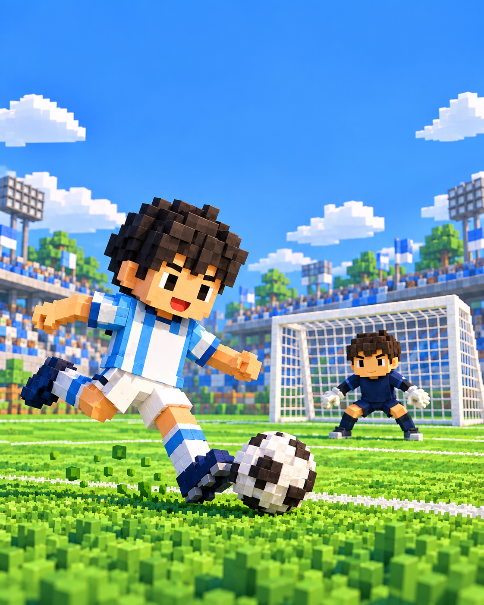

ほぞんが できません。おうちの ひとに みせてね。
このまま あそべますが、とじると きろくが のこらないことが あります。
このまま あそべますが、とじると きろくが のこらないことが あります。

しゅうすけの
29 しゅうそうたきいて おぼえる
こえに あわせて いってみよう。
ひとつずつ おしても きけるよ。
ゴール0
シュート0
そうたの セーブ0
そうた
GK
29
しゅうつづきは なあに？
NICE PLAY!
やったね！
保護者の設定
スマホ版 v15（ブロックのトップ画面）。設定は変更すると自動保存します。「もどる」でも保存します。写真・音声は登録時に保存します。
顔写真の登録・削除
画像の中央を正方形に切り抜き、最大384pxに縮小します。顔が中央にある写真を選んでください。登録前に写真アプリで切り抜くと調整できます。
九九・家族の録音音声を登録
録音ファイルは端末内だけに保存します。未登録の音声は、端末内の日本語合成音声で読みます。九九は「全文」と「出題」を別々に登録できます。
1ファイル10MB以内・90秒以内。MP3／AAC（M4A）／WAVを推奨。対応形式は端末によります。
録音中は画面を開いたままにしてください。録音にはマイクの許可が必要です。音声認識はしません。
学習の記録
| 式 | 正解 | 再挑戦 | 連続正解 | 復習 |
|---|
正解・不正解は3択の結果です。暗唱できたかの自動判定はしません。写真・録音は消えません。
ホーム画面・オフライン・データ
オフラインの準備中…
iPhone：Safariの共有 → ホーム画面に追加。
Android：Chromeの︙ → ホーム画面に追加／インストール。
初回は通信が必要です。準備完了後は出題・復習・登録音声がオフラインで使えます。合成音声は端末内の日本語音声が必要です。データはこの端末・このURLだけに保存し、同期や外部送信はしません。ブラウザーのデータ消去などで失われるため、大切な写真・録音の原本は手元に残してください。